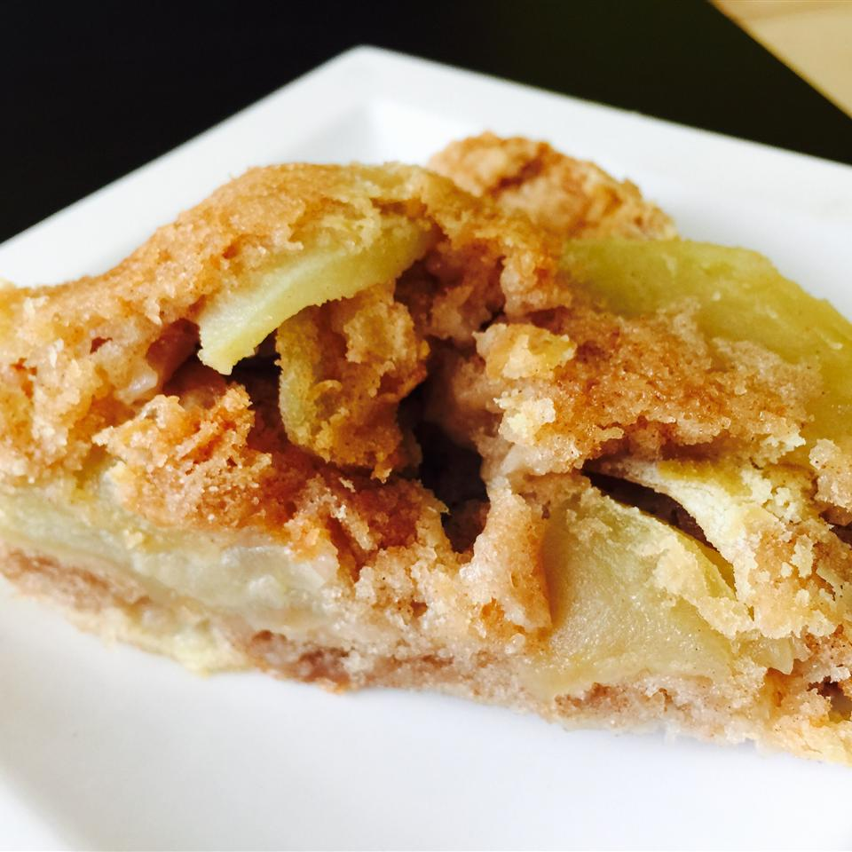

German Apple Cake

The German Apple Cake is a moist dense cake
An easy to follow recipe with a touch of cinnamon
What ingredients do you need?
For the Cake:
- 2 eggs
- 1 cup vegetable oil
- 2 cups white sugar
- 2 teaspoons ground cinnamon
- 1/2 teaspoon salt
- 1 teaspoon vanilla extract
- 2 cups all-purpose flour
- 1 teaspoon baking soda
How to make
- Preheat the oven to 175 degrees C. Grease and flour one 9x13 inch cake tin
- In a mixing bowl; beat oil and eggs with an electric mixer until creamy. Add the sugar and vanilla and beat well
- Combine the flour salt, baking soda, and ground cinnamon together in a bowl. Slowly add this mixture to the egg mixture and mix until combined. The batter will be very thick. Fold in the apples by hand using a wooden spoon. Spread batter into the prepared pan.
- Heat butter and coconut oil in a saucepan over low heat until just melted but not too hot. Whisk into the bowl with the eggs and sugar until well combined. Add carrots, crushed pineapple, pecans, and walnuts. Stir well.
- Stir flour mixture into the carrot mixture until no dry spots remain. Pour batter into a greased 9x13-inch baking pan. Tap the pan against your counter to let any big air bubbles rise to the surface.
- Bake at 350 degrees F (175 degrees C) for 45 minutes or until cake tests done. Let cake cool on a wire rack. Once cake is cool serve with a dusting of confectioners' sugar or with a Cream Cheese Frosting.
Main Page
Back to Top